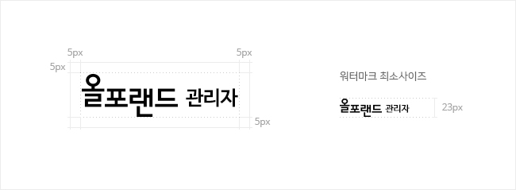

시스템 로고
시스템 로고
올포랜드의 아이텐티티를 저해하지 않는 수준에서 다음과 같은 가이드에 따라 내부 업무 시스템 로고를 제작, 사용한다.
기본 가이드
- 내부 업무 시스템 로고에는 blossoming 심볼을 제외한 워드마크만을 사용한다.
- 사명을 표기할 시에는 로고원본을 사용한다.
- 워드마크의 컬러는 Black/White/Gray 만 사용한다.
로고형식
시스템에 대한 설명이 필요한 시스템명은 시스템명 하단에 함께 표기하도록 하며,메뉴용과 같이 링크의 목적으로 사용시에는 시스템명만 사용한다.
최소 공간 및 그리드 규정
올포랜드 로고(워드마크) 조합으로 사용하며, 올포랜드의 심볼로 사명을 표현하고자 할 경우 푸터의 카피라이트 영역이나, 비주얼이미지로 사용되는 디자인영역에 단독으로 사용한다.
